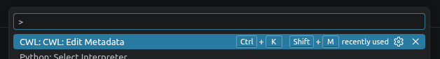
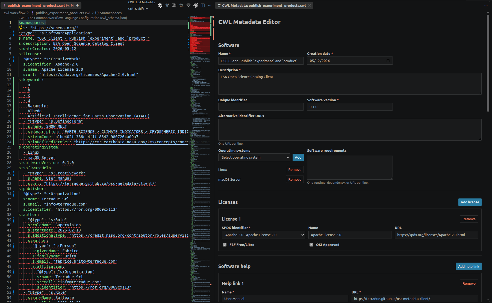

Edit metadata for your first CWL tool¶
In this tutorial, you will add publication-ready Schema.org metadata to a small CWL command-line tool without leaving VS Code.
Before you begin¶
You need Visual Studio Code and the CWL Metadata Editor extension installed. If you are installing a locally built package, run:
1. Create a CWL file¶
Create hello.cwl and paste this document:
cwlVersion: v1.2
class: CommandLineTool
baseCommand: echo
inputs:
message:
type: string
inputBinding:
position: 1
outputs: {}
Keep hello.cwl active in the editor.
2. Open the metadata editor¶
Press Ctrl+K Shift+M (⌘K Shift+M on macOS) or open the Command Palette and run CWL: Edit CWL Metadata. You can also use the command from the editor title or the .cwl file's Explorer or editor context menu (Edit CWL Metadata).
The form opens beside hello.cwl. Because the file has no supported metadata yet, its fields are initially empty.

3. Describe the software¶
Enter the following values in Software:
| Field | Value |
|---|---|
| Name | Hello CWL |
| Creation date | today's date |
| Description | Print a supplied message. |
| Software version | 1.0.0 |
Choose an operating system if the tool is platform-specific, and list any runtime or dependency under Software requirements.
Watch hello.cwl as you edit. The metadata block appears in the document automatically; there is no Generate or Copy step.
4. Add attribution¶
Under Licenses, choose an SPDX identifier. Add a Software help entry with a name and URL.
Enter the publisher organization. When its name matches a Research Organization Registry (ROR) record, the editor can suggest its identifier. Then complete the first author. Use Use publisher affiliation if the author's organization is the publisher.
Optionally choose a CRediT role. Supplying role details makes the author a Schema.org Role whose s:author value is the person.
5. Add discovery terms¶
Add free-text keywords, select Earth Observation keywords, or add a GCMD Science keyword through the hierarchical picker. Structured GCMD entries are written as Schema.org DefinedTerm values.
6. Review the result¶
Return to hello.cwl. Its CWL implementation is unchanged, while the file now begins with metadata similar to:
$namespaces:
s: https://schema.org/
'@type': s:SoftwareApplication
s:name: Hello CWL
s:description: Print a supplied message.
s:dateCreated: '2026-08-01'
s:softwareVersion: 1.0.0
cwlVersion: v1.2
class: CommandLineTool
baseCommand: echo
inputs:
message:
type: string
inputBinding:
position: 1
outputs: {}
The complete block will also contain the license, help, publisher, author, and keyword values you supplied.
Save the file and inspect its source-control diff as you would for any code change. You have now added metadata without moving generated YAML between a browser and your source tree.

Next steps¶
- Learn how to safely revise an annotated file in Edit existing metadata.
- See the exact YAML mapping in Metadata fields.
- Use Transpiler Mate when you are ready to convert or publish the metadata.